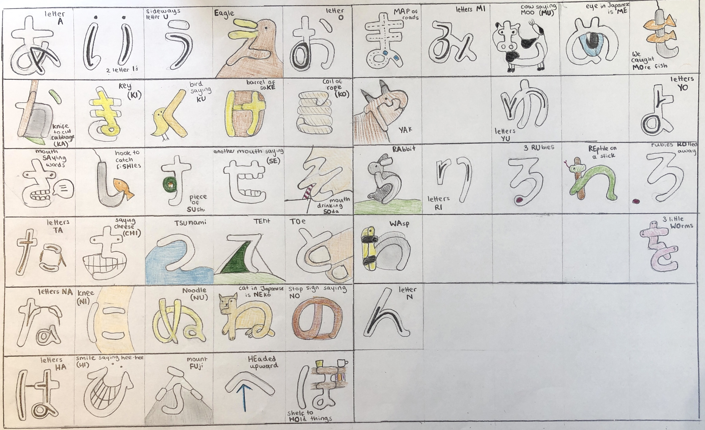

Hiragana is a group of characters that represent Japanese sounds. Below are two tables that both show the Hiragana characters. The table on the left shows the pronounciation that corresponds to each character and the table on the right shows how each character looks when it is hand written. As you can see from the pronounciation the Hiragana table is organised so that there are five inital vowel sounds (a,i,u,e,o) that are each added to a consonant as you go down the table, totalling to 46 different characters. The only character that does not follow this rule is ん as it does not have a vowel as part of its pronounciation. Watch out for the irregular pronounciations (し,ち,つ,ふ)!
The pronunciation of the vowels is as follows:
A as in cat
I as in emu
U as in moo
E as in elephant
O as in dog
| あ a | い i | う u | え e | お o |
| か ka | き ki | く ku | け ke | こ ko |
| さ sa | し shi | す su | せ se | そ so |
| た ta | ち chi | つ tsu | て te | と to |
| な na | に ni | ぬ nu | ね ne | の no |
| は ha | ひ hi | ふ fu | へ he | ほ ho |
| ま ma | み mi | む mu | め me | も mo |
| や ya | ゆ yu | よ yo | ||
| ら ra | り ri | る ru | れ re | ろ ro |
| わ wa | を wo | |||
| ん n |

Try using the mnemonics below to help you remember the Hiragana characters. These mnemonics are pictures that create a link between the shape of the Hiragana character and its pronunciation which is one of the most effective memorisation techniques that Japanese learners use.
